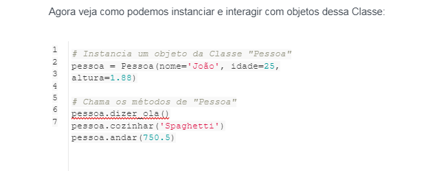
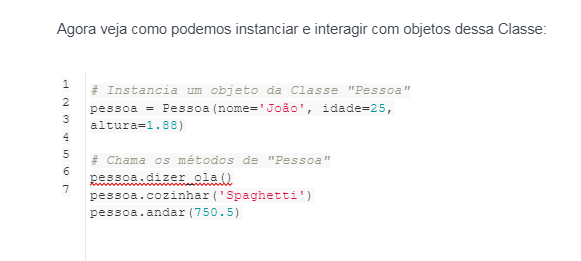
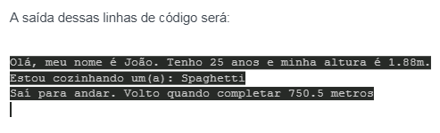

Esses conceitos são os pilares da Programação Orientada a Objetos então é muito importante que você os DOMINE:
- As Classes são tipos de dados definidos pelo desenvolvedor que atuam como um modelo para objetos. Pra não esquecer mais: Classes são fôrmas de bolo e bolos são objetos.
- Objetos são instâncias de uma Classe. Objetos podem modelar entidades do mundo real (Carro, Pessoa, Usuário) ou entidades abstratas (Temperatura, Umidade, Medição, Configuração)
- Métodos são funções definidas dentro de uma classe que descreve os comportamentos de um objeto. Em Python, o primeiro parâmetro dos métodos é sempre uma referência ao próprio objeto.
Os atributos são definidos na Classe e representam o estado de um objeto. Os objetos terão dados armazenados nos campos de atributos. Também existe o conceito de atributos de classe, mas veremos isso mais pra frente.
Python possui palavras reservadas (keywords) para criarmos Classes e Objetos.
Primeiro, temos a keyword class que utilizamos para criar uma classe.
Também temos a keyword self, utilizada para guardar a referência ao próprio objeto.
Uma observação importante, caso você venha de outra linguagem de programação: Python não utiliza a keyword new para instanciar novos objetos!
Vamos logo para o código! Tudo ficará mais claro
Vamos criar uma classe que representa uma entidade do tipo Pessoa!
Ela deve ter os seguintes campos:
Nome como String;
Idade como Inteiro;
Altura como Decimal.
Também deve ter métodos para:
Dizer “Olá”;
Cozinhar;
Andar.

Agora vamos explicar “tintim por tintim”:
Temos a definição da Classe na primeira linha com class Pessoa. Isso diz ao Python que vamos criar a definição de uma nova classe.
Em seguida, temos o método __init__. Ele é muito importante e é chamado de Construtor. Ele é chamado ao se instanciar objetos e é nele que geralmente setamos os atributos do objeto.
Em seguida temos a definição dos métodos dizer_ola(), cozinhar() e andar().
Perceba que no método dizer_ola() referenciamos os atributos do próprio objeto com o argumento self: self.nome, self.idade e self.altura.

Se lembra do Construtor?
Então, ele entrou em ação na linha 2 do código acima!
Quando escrevemos pessoa = Pessoa(), chamamos o método __init__ da classe Pessoa, passando os parâmetros nome, idade e altura.
A saída dessas linhas de código será:
